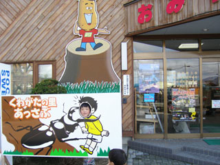
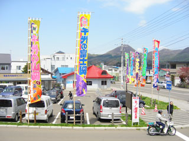
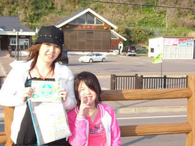

あっさぶ
てっくいランド大成
江差
ルート２２９元和台
しりうち
なとわ えさん
横綱の里 ふくしま
つど～る・プラザ・さわら
上ノ国もんじゅ
YOU・遊・もり
1
オニウシ公園という素敵な名前の公園が一緒にある 道の駅です。
結構 大きな公園で 春は 桜の名所になってるらしいです。
芝生も 広がってるんで お弁当を持って 出かけるにはいいとこだと
思いますよ～～。
２

なんだか ログハウスみたいな建物で 真新しい香りがしてました。
ここに家を建てると ２００万もらえるらしい。北海道の大自然にすみたい方は必見
（￣－￣） シーン
いろんな味のソフトが 売ってました。 食べてないけど・・・・
１０
海沿いの 田舎風なとこにある 道の駅。
ブルーベリーが産地らしく ブルーベリーソフトを食べました。
目にいいしさ。
行ってないけど ４階には 展望台があるらしく
室蘭の白鳥大橋が 見える事もあるらしい。
９
あの健康食品 めかぶ昆布の産地。
キャンプ場も隣接されてて きれいな道の駅でした。
なんだか 室内の幼児が遊ぶスペース
があったのが 変わってて印象的。
津軽海峡が 一望できて
なかなか きれいな場所です。
３
海沿いの 休憩所のような 道の駅。
なんだか その昔 繁次郎という 酒飲みのおもしろいおっちゃん（？）がいたらしく
銅像までありました。そして その人の名前のついた浜になってました。
繁次郎番屋宿泊施設 ってなとこがあって 泊まれるらしい。
４
車を降りたとたん なんだか 演歌が・・・・。
(°д°;;) ナント！ 北島さぶちゃん。
さぶちゃんの 出身地だそうで 大々的にさぶちゃんをバックアップ。
さぶちゃんせんべい。 さぶちゃん羊羹 ｴﾄｾﾄﾗ
５

この日は 女だらけの相撲大会が実施中。
参加してみたかったけど 優勝したら まずいんで やめときました。（しないって）
千代の富士の出身地？？ 博物館がありました。相撲ファン必見ポイント
６
道の駅と言うより なんだか 地域の交流センターっぽい。
図書館があったり パソコンコーナーがあったり。
２階にレストランがあり ここの 海の幸メニューは なかなか おいしそうだった。
７

目の前が 海水浴場なんで コインシャワーがあったりします。
ここで 泳いで シャワーを浴びて帰る。なんて 便利なんだ。
でも 混むだろうけどね。 ２個しかないし。(￣ェ￣;)
つりを楽しむ キャンパー達がいました。
海の反対側は あの 奥尻島がうっすらと みえました。
８
海沿いの景色のいい道の駅。
すぐ隣に うみそのまんまの プール？ 海水浴場があります。
高台になってて 景色は最高。 きっと 夕焼け時は いいんだろうな～。